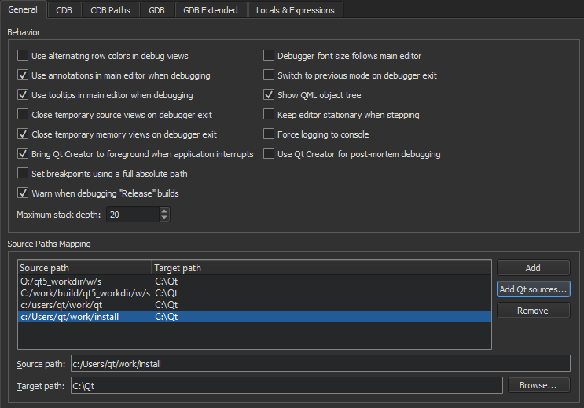

Debug Mode Views
In the Debug mode, you can inspect the state of your application while debugging.
You can interact with the debugger in many ways:
- Interrupt running applications.
- Set breakpoints.
- Step through an application line-by-line or instruction-by-instruction.
- Examine the contents of the call stack.
- Examine and modify contents of local and global variables.
- Examine and modify registers and memory contents of the debugged application.
- Examine the list of loaded shared libraries.
- Disassemble sections of code.
The following table summarizes the Debug mode views with links to more information.
| View | Purpose | Learn More |
|---|---|---|
| Stack | Examine the nested function calls leading to the current position as a call stack trace. | Viewing Call Stack Trace |
| Breakpoint Preset Breakpoints | Set breakpoints with conditions to make the application stop in a controlled way. A watchpoint stops the application when the value of an expression changes. | Setting Breakpoints |
| Threads | Switch between threads. | Viewing Threads |
| Modules | View information about modules included in the application. | Viewing Modules |
| Source Files | View a list of source files included in the project. | Viewing Source Files |
| Locals | View information about the parameters of the function in the topmost stack frame and local variables. | Local Variables and Function Parameters |
| Expressions | Compute values of arithmetic expressions or function calls. | Evaluating Expressions |
| Registers | View the current state of the CPU registers to examine the application at the machine level. | Viewing and Editing Register State |
| Peripheral Registers | View the current state of peripheral registers. | Peripheral Registers |
| Global Debugger Log Debugger Log | View debug output to find out why the debugger does not work. The log view acts as a console, so you can send the contents of the line under the text cursor in the log directly to the native debugger. | Troubleshooting Debugger |
| Disassembler | View disassembled code for the current function. | Viewing Disassembled Code |
| Editor | Open the current source file in the text editor for changing it. | Edit Mode |
Note: The Views menu shows some views only while you are debugging.
Managing Debug Views
When you are not debugging, the Debug mode shows the Debugger Preset perspective:

During debugging, the mode shows the views that you usually need to debug C++ or QML applications. To show other views or to hide views, select Views.
You can drag the views in Qt Creator to new positions on the screen. Qt Creator saves the size and position of views as a perspective for future sessions. Select View > Views > Reset to Default Layout to reset the views to their original sizes and positions.
To show and hide columns in views, toggle Show Column in the context menu.
Customizing Debug Views
To change the appearance and behavior of the debug views, set preferences in Preferences > Debugger > General.

For example, you can:
- Use alternating row colors in debug views.
- Adopt font size changes from the main editor.
- Show tooltips in the main editor while you are debugging.
- Close temporary source and memory views and switch to the previously used Qt Creator mode when the debugger exits.
- Bring Qt Creator to the foreground when the debugged application is interrupted.
For more information, see Debugger Preferences.